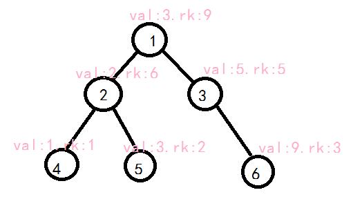
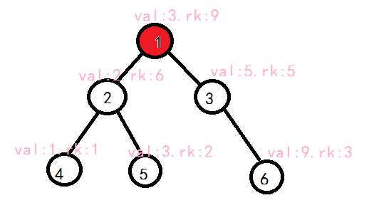
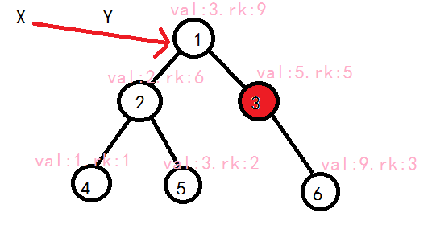
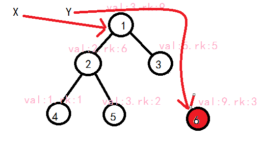

FHQ Treap¶
简介¶
FHQ Treap是一种神奇的数据结构，也叫非旋Treap，而且它能完成Treap与Splay能完成的所有事，代码短，理解也容易。唯一的缺点可能在于常数较大。（不用担心，常数比Splay小）
基本操作¶
FHQ Treap和Treap很像，都是给每个节点一个随机的权值，使它满足堆的性质。建议先了解Treap（没必要实现，懂得原理即可）。不过，如果有两个节点值相同，FHQ Treap不会用一个数组cnt记录个数，而是直接再开一个节点。
FHQ的基本操作只有两个：Split与Merge。
Split把一棵树分成两棵，Merge把两棵树合并成一棵。 从序列（也就是平衡树的中序遍历）的角度来看，Splay就是将一个序列从某个地方断开变成两个序列，Merge是将两个序列首尾相接合并成一个序列。
变量&函数约定¶
1 2 3 4 | int L[MAXN], R[MAXN], sz[MAXN], rk[MAXN], val[MAXN], tot; int root; int New( int v ){ return val[++tot] = v, rk[tot] = rand(), L[tot] = R[tot] = 0, sz[tot] = 1, tot; } #define Updata(x) sz[x] = sz[L[x]] + sz[R[x]] + 1 |
L[i]表示i的左儿子，R[i]表示i的右儿子，sz[i]表示以i为根的子树包含的节点数，rk[i]表示为了保持平衡随机赋予的权值，val[i]表示该节点保存的值，tot表示节点数，root表示当前的根节点。
New(v)表示新建一个值为v的节点（可以看成一棵只有一个节点平衡树）
Updata(x)表示更新节点x的sz
提醒：这里"值"与"权值"是不一样的，"值"表示节点保存的值，"权值"仅仅用于维持平衡，注意区分
Split¶
怎么分割呢？
常见的分割方法有两种，一种是按值分，一种是按排名分（实现差不多，这里只讲按值分）。
先来看看定义。
1 | void Split( int c, int k, int &x, int &y ); |
c表示当前要分割的树的根节点，并且把值\le k的节点分割出来，构成一棵树，把x赋为根节点，其他节点另外构成一棵树，把y赋为其根节点。x、y用引用(&)更方便处理。
对于当前的树，如果根节点c的值\le k，c的左子树也全部\le k，所以我们可以把x赋为c，保留左子树，将右子树\le k的部分分割出来作为x的右子树。剩下的部分自然也就是在> k的部分。>k的情况同理。具体我们用递归实现。




1 2 3 4 5 6 | void Split( int c, int k, int &x, int &y ){ if ( c == 0 ){ x = y = 0; return; }//如果当前处理的树为空，分出的两个子树当然也为空，所以直接赋值返回。 if ( val[c] <= k ) x = c, Split( R[c], k, R[x], y );//如果根节点值小于等于k，把x赋为c，继续处理右子树，并把小于等于k的部分分到x的右子树，其他分到y else y = c, Split( L[c], k, x, L[y] ); Updata(c);//别忘了更新sz } |
Merge¶
上面分割的操作不会改变堆的性质与二叉查找树的性质，但是在合并的时候要注意保持堆的性质。
1 | void Merge( int &c, int x, int y ); |
表示把以x和y为根节点的树合并，将c赋为根节点。
注意：上面分割时x的所有节点的值都小于y的，合并时也要注意x的所有节点小于等于y，否则会出错
由于x与y的权值在两颗树中是最大的，所以合并后的树根节点不是x就是y。所以比较x与y的权值就可以判断谁为根节点。
假设以x为根。因为保证x的所有节点的值都小于等于y的，所以y肯定会合并在x的右子树。所以，我们不用动x的左子树，合并x的右子树与y作为x的右子树。y为根时同理。这样，就巧妙完成了同时维护堆的性质与二叉查找树的性质。
我们还是用递归。
1 2 3 4 5 6 | void Merge( int &c, int x, int y ){ if ( !x || !y ){ c = x | y; return; } if ( rk[x] >= rk[y] ) c = x, Merge( R[x], R[c], y ); else c = y, Merge( L[y], x, L[c] ); Updata(c); } |
只要理解这两种操作，剩下的都可以用这两种操作实现。
插入操作¶
直接把它分成\le v的树和> v的树，将新建的节点与\le v的树合并，再与>y树合并即可。
1 2 3 4 5 6 7 | //opt 1 void Ins( int v ){ int x, y, z(New(v)); Split( root, v, x, y ); Merge( x, x, z ); Merge( root, x, y ); } |
删除操作¶
分成\le k和> k两颗树，再分成 < k、 =k、 > k三棵树，将=k左右子树合并，相当于删去=k的一个节点，然后将三棵树重新合并即可。
1 2 3 4 5 6 7 8 9 | // opt 2 void Del( int v ){ int x, y, z; Split( root, v, x, y ); Split( x, v - 1, x, z ); Merge( z, L[z], R[z] ); Merge( x, x, z ); Merge( root, x, y ); } |
查询排名¶
其实可以用while循环，，，但是，，，我，，，懒，，，所，，，以，，，直，，，接，，，，，，，
1 2 3 4 5 6 7 8 | //opt 3 int GetRankByVal( int v ){ int x, y, t; Split( root, v - 1, x, y ); t = sz[x]; Merge( root, x, y ); return t + 1; } |
查询值¶
这真的不能用Split和Merge偷懒了，，，所以乖乖写个while吧~
技术含量不高，自行理解。
1 2 3 4 5 6 7 8 9 10 | //opt 4 int GetValByRank( int rk ){ int c(root); while( c ){ if ( sz[L[c]] + 1 == rk ) return val[c]; else if ( sz[L[c]] >= rk ) c = L[c]; else rk -= 1 + sz[L[c]], c = R[c]; } return -1;//题目没要求。。。只是为了自己查错 } |
查询前缀¶
分成两颗树< v与\ge v，在< v树中找最大值即可。
1 2 3 4 5 6 7 8 9 10 11 12 13 14 15 16 17 18 19 20 21 22 23 24 25 26 27 | //opt 5 int GetPre( int v ){ int x, y, z; Split( root, v - 1, x, y ); z = x; while( R[z] ) z = R[z]; Merge( root, x, y ); return val[z]; } ```` ------ ## 查询后缀 与查询前缀同理。 ```cpp //opt 6 int GetNxt( int v ){ int x, y, z; Split( root, v, x, y ); z = y; while( L[z] ) z = L[z]; Merge( root, x, y ); return val[z]; } |
完整代码¶
1 2 3 4 5 6 7 8 9 10 11 12 13 14 15 16 17 18 19 20 21 22 23 24 25 26 27 28 29 30 31 32 33 34 35 36 37 38 39 40 41 42 43 44 45 46 47 48 49 50 51 52 53 54 55 56 57 58 59 60 61 62 63 64 65 66 67 68 69 70 71 72 73 74 75 76 77 78 79 80 81 82 83 84 85 86 87 88 89 90 91 92 93 94 95 96 | #include<bits/stdc++.h> using namespace std; #define MAXN 100005 int L[MAXN], R[MAXN], sz[MAXN], rk[MAXN], val[MAXN], tot; int root; int New( int v ){ return val[++tot] = v, rk[tot] = rand(), L[tot] = R[tot] = 0, sz[tot] = 1, tot; } #define Updata(x) sz[x] = sz[L[x]] + sz[R[x]] + 1 void Split( int c, int k, int &x, int &y ){ if ( c == 0 ){ x = y = 0; return; } if ( val[c] <= k ) x = c, Split( R[c], k, R[x], y ); else y = c, Split( L[c], k, x, L[y] ); Updata(c); } void Merge( int &c, int x, int y ){ if ( !x || !y ){ c = x | y; return; } if ( rk[x] >= rk[y] ) c = x, Merge( R[x], R[c], y ); else c = y, Merge( L[y], x, L[c] ); Updata(c); } //opt 1 void Ins( int v ){ int x, y, z(New(v)); Split( root, v, x, y ); Merge( x, x, z ); Merge( root, x, y ); } // opt 2 void Del( int v ){ int x, y, z; Split( root, v, x, y ); Split( x, v - 1, x, z ); Merge( z, L[z], R[z] ); Merge( x, x, z ); Merge( root, x, y ); } //opt 3 int GetRankByVal( int v ){ int x, y, t; Split( root, v - 1, x, y ); t = sz[x]; Merge( root, x, y ); return t + 1; } //opt 4 int GetValByRank( int rk ){ int c(root); while( c ){ if ( sz[L[c]] + 1 == rk ) return val[c]; else if ( sz[L[c]] >= rk ) c = L[c]; else rk -= 1 + sz[L[c]], c = R[c]; } return -1; } //opt 5 int GetPre( int v ){ int x, y, z; Split( root, v - 1, x, y ); z = x; while( R[z] ) z = R[z]; Merge( root, x, y ); return val[z]; } //opt 6 int GetNxt( int v ){ int x, y, z; Split( root, v, x, y ); z = y; while( L[z] ) z = L[z]; Merge( root, x, y ); return val[z]; } int T; int main(){ srand(time(0));//随机数种子别忘了 root = New(INT_MAX);//虚节点，避免一个节点都没有不方便合并。注意要用一个很大的数，查询排名时就不用-1 scanf( "%d", &T ); while( T-- ){ int opt, x; scanf( "%d%d", &opt, &x ); switch( opt ){ case 1: Ins(x); break; case 2: Del(x); break; case 3: printf( "%d\n", GetRankByVal(x) ); break; case 4: printf( "%d\n", GetValByRank(x) ); break; case 5: printf( "%d\n", GetPre(x) ); break; case 6: printf( "%d\n", GetNxt(x) ); break; } } return 0; } |
FHQ Treap还可以资瓷可持久化~比Treap、Splay好用多啦。 FHQ Treap甚至可以拿来写LCT,但是常数过大。 树套树也可以用FHQ Treap,但是常数过大,最好别使用FHQ Treap来套。